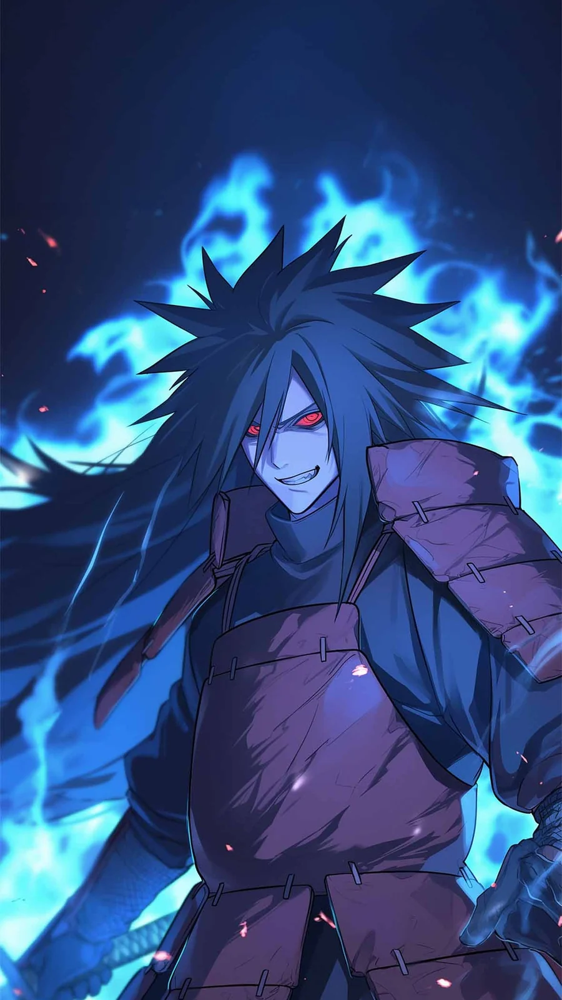
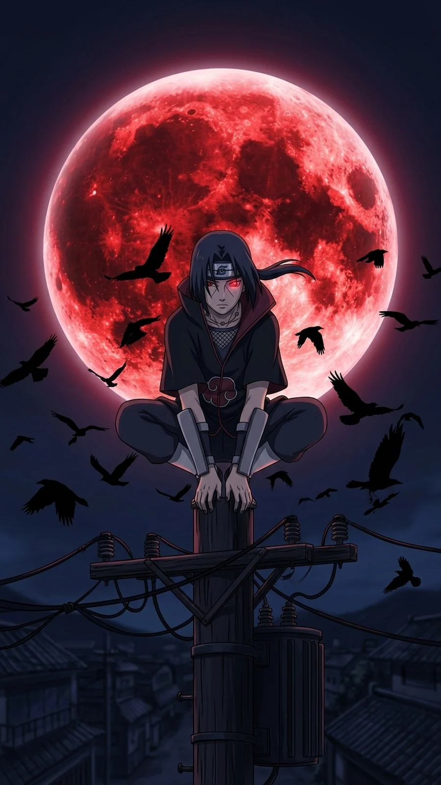

Naruto Shippuden Part 9: Seasons 14-15 (Episodes 296-348) - Every Episode Explained

Last updated: 20 October 2026
This is Part 9 of the complete Naruto Shippuden episode-by-episode guide, covering Seasons 14 and 15 - Episodes 296 to 348. This is the middle of the Fourth Great Ninja War, and it contains two of the biggest moments in the whole franchise: Madara Uchiha's arrival, and Itachi's farewell to Sasuke.
At a glance
- Episodes: 296-348 (53 episodes)
- Season 14: The Fourth Great Ninja War: Assailants From Afar - episodes 296-320 - canon + a little filler
- Season 15: The Fourth Great Ninja War: Sasuke and Itachi - episodes 321-348 - canon
- Aired: 17 January 2013 - 30 January 2014
- Season 14 score: 8/10 · Season 15 score: 9.5/10
Season 15 is one of the strongest stretches in Shippuden. Naruto and Kurama finally becoming partners, Madara wiping out an army on his own, and Itachi's goodbye are all here. Season 14 is slightly thinner - it has some filler episodes in the middle - but its back half is excellent.
Every episode explained
Episode 296: Naruto Enters the Battle!
Naruto arrives on the battlefield in Sage Mode and turns the tide against the White Zetsu army.
Note: One of the most satisfying entrances in the war.
Episode 297: A Father's Hope, A Mother's Love
The theme of the war is tied back to Naruto's parents and what they believed about him.
Note: Quiet and effective.
Episode 298: Contact! Naruto vs. Itachi
Naruto meets the reanimated Itachi, and the two of them talk rather than fight.
Note: A great conversation between two people who understand each other.
Episode 299: The Acknowledged One
Naruto's growth is measured against everyone who doubted him.
Note: A nice payoff for a long-running thread.
Episode 300: The Mizukage, the Giant Clam, and the Mirage
The Mizukage fights a reanimated Kage and a giant clam.
Note: Surreal, and fun.
Episode 301: Paradox
The war's contradictions - fighting people you love - are laid bare.
Note: Strong theme work.
Episode 302: Terror: The Steam Imp
A reanimated Kage's steam technique causes real damage.
Note: Good action.
Episode 303: Ghosts from the Past
Reanimated enemies force the heroes to confront their pasts.
Note: Solid.
Episode 304: The Underworld Transfer Jutsu
A forbidden technique is explained and used.
Note: Lore-heavy.
Episode 305: The Vengeful
A character driven by revenge faces the consequences.
Note: Dark.
Episode 306: The Heart's Eye
The theme of seeing people truly is explored.
Note: Quiet.
Episode 307: Fade into the Moonlight
A sombre episode about a character's death.
Note: Well-handled.
Episode 308: Crescent Moonlight
The follow-up, dealing with grief and memory.
Note: Emotional.
Episode 309: The A-Rank Mission: Food Fight
A light filler episode about a mission that turns into a cooking contest.
Note: Comedy relief.
Episode 310: The Fallen Castle
A filler story set around a castle under siege.
Note: Watchable.
Episode 311: Prologue of Road to Ninja
A tie-in episode for the Road to Ninja film.
Note: Filler, but it has a point.
Episode 312: The Old Master and the Dragon's Eye
A filler episode about an old man and a legendary eye.
Note: Standalone.
Episode 313: Rain Followed by Snow, with Some Lightning
A filler episode with three linked weather-themed stories.
Note: Odd but charming.
Episode 314: The Sad Sun Shower
A filler story about a strange kind of weather.
Note: Light.
Episode 315: Lingering Snow
A filler story about a memory that will not fade.
Note: Sentimental.
Episode 316: The Reanimated Allied Forces!
The reanimation jutsu is turned on the Alliance's own dead.
Note: The darkest turn of the war.
Episode 317: Shino vs. Torune!
Shino faces a reanimated member of his own clan.
Note: Shino finally gets a real fight.
Episode 318: A Hole in the Heart: The Other Jinchuriki
The reanimated jinchuriki are explored, and the tragedy of what they are is shown.
Note: A strong emotional beat.
Episode 319: The Soul Living Inside the Puppet
A puppet master's reanimated puppet fights on.
Note: Good action.
Episode 320: Run, Omoi!
Omoi gets a spotlight episode.
Note: Fun.
Episode 321: Reinforcements Arrive
Reinforcements reach the battlefield, and the scale grows again.
Note: Big.
Episode 322: Madara Uchiha
The real Madara Uchiha is reanimated and enters the war. He is unlike anything the Alliance has faced.
Note: One of the best villain reveals in the series.
Episode 323: The Five Kage Assemble
All five Kage gather to fight Madara together.
Note: A huge moment.
Episode 324: The Unbreakable Mask and the Shattered Bubble
The Kage fight Madara, and his power is shown to be absurd.
Note: Brilliant action.
Episode 325: Jinchuriki tai Jinchuriki!!
Naruto and Killer B face the reanimated jinchuriki.
Note: A clash of equals.
Episode 326: Four Tails, the King of Sage Monkeys
Son Goku, the Four-Tails, is introduced and befriended.
Note: A great new character.
Episode 327: Nine Tails
Naruto fights the Nine-Tails inside himself for full control.
Note: The core of Naruto's arc.
Episode 328: Kurama
The Nine-Tails finally names itself and accepts Naruto. One of the biggest payoffs in the series.
Note: Essential. One of the best episodes.
Episode 329: Two-Man Team
Naruto and Kurama fight as partners for the first time.
Note: Hugely satisfying.
Episode 330: The Promise of Victory
The Alliance gains hope as Naruto's power turns the war.
Note: Uplifting.
Episode 331: Eyes That See in the Dark
Madara's plans and the Eye of the Moon are explored.
Note: Lore-heavy.
Episode 332: A Will of Stone
Onoki's past and his will are told.
Note: Character work.
Episode 333: The Risks of the Reanimation Jutsu
The weaknesses of the reanimation jutsu are found.
Note: Setup.
Episode 334: Sibling Tag Team
Sasuke and Itachi fight together against Kabuto.
Note: A dream pairing.
Episode 335: To Each Their Own Leaf
The brothers' differing ideas of the village are compared.
Note: Thematic.
Episode 336: Kabuto Yakushi
Kabuto's past and his obsession with identity are told.
Note: Makes the villain understandable.
Episode 337: The Izanami Activated
Itachi uses Izanami, a technique that traps the target in a loop.
Note: A clever power.
Episode 338: Izanagi and Izanami
The history of the two forbidden techniques is explained.
Note: Important lore.
Episode 339: I Will Love You Always
Itachi says goodbye to Sasuke. One of the most famous scenes in the franchise.
Note: Devastating, and earned.
Episode 340: Reanimation Jutsu: Release!
Itachi releases the reanimation jutsu, and the reanimated dead finally rest.
Note: A huge, moving sequence.
Episode 341: Orochimaru's Return
Orochimaru is brought back, and the story turns toward the truth about Konoha.
Note: A great return.
Episode 342: Secret of the Transportation Technique
The mystery of the masked man's space-time technique is explored.
Note: Plot-heavy.
Episode 343: Who Are You?
The masked man's identity starts to crack.
Note: Big reveal territory.
Episode 344: Obito and Madara
The relationship between Obito and Madara is explained.
Note: The full picture.
Episode 345: I'm in Hell
Obito's past and his fall are told in full.
Note: Tragic.
Episode 346: World of Dreams
Obito's plan for the Eye of the Moon is laid out.
Note: Sets up everything after.
Episode 347: Creeping Shadow
The war's shadow spreads further.
Note: Setup.
Episode 348: The New Akatsuki
The season closes on a new version of the Akatsuki taking shape.
Note: A strong cliffhanger.

Part 9 verdict
Episodes 322 to 330 are the peak of this part. Madara arriving and immediately showing that the entire Allied army is not enough is one of the best villain introductions ever written, and then Naruto and Kurama finally becoming partners is the payoff the series has been building since Episode 1.
Episodes 334 to 340 are the other peak. Sasuke and Itachi fighting side by side, Kabuto's past, and then Itachi's final words to his brother make up the most emotional run in Shippuden outside of Jiraiya's death.
Overall: 9/10. Essential war episodes with two enormous payoffs.

Next in this series
Continue the episode-by-episode guide with the next part.